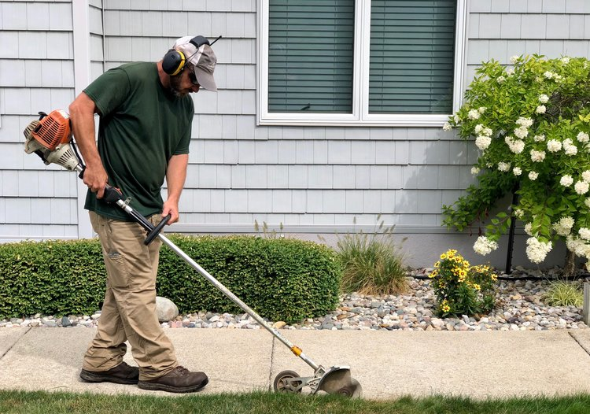
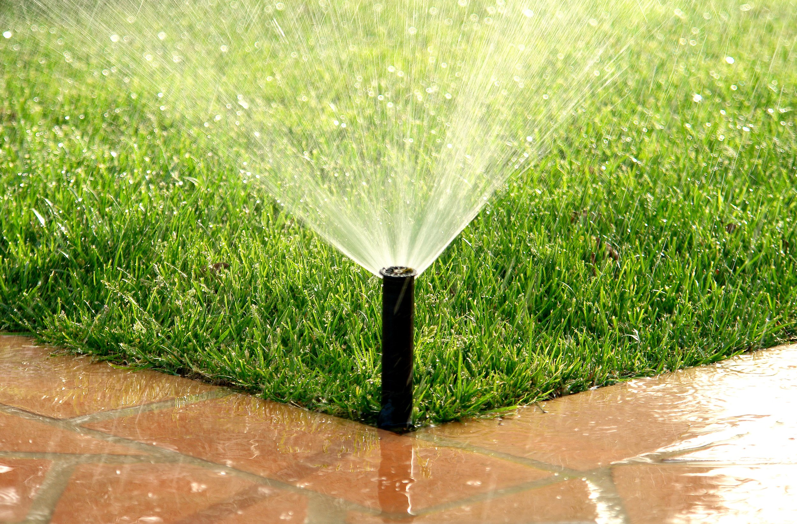

Sculpting and Scaping
Why spend your own time and effort mowing your lawn when you can hire a professional to do it for you at a truly affordable price? When you select Lana's Lawncrafts as your lawn care provider,
we guarantee your satisfaction. We include a variety of smaller services within our regular mowing service, so you can reap the full benefits of professional lawn care.

Your satisfaction is our #1 priority. Just like pro sporting event turf, the lawn around your residence or business requires attention and service. Our flexibility and ability to customize a lawn care program for your property allows your business or home gatherings to make a great first impression.
Professional trimming, edging and clean-up:
- Trimming
- Edging
- Leaf Blowing
- Lawn Maintenance
- Comprehensive Yard clean-up
- Irrigation Installation/Maintenance
Residential and Commercial services:
- Feeding and Spot Repair
- Shrub Maintenance
- Flower Bed Maintenance
- Commercial Landscaping
- Commercial Irrigation